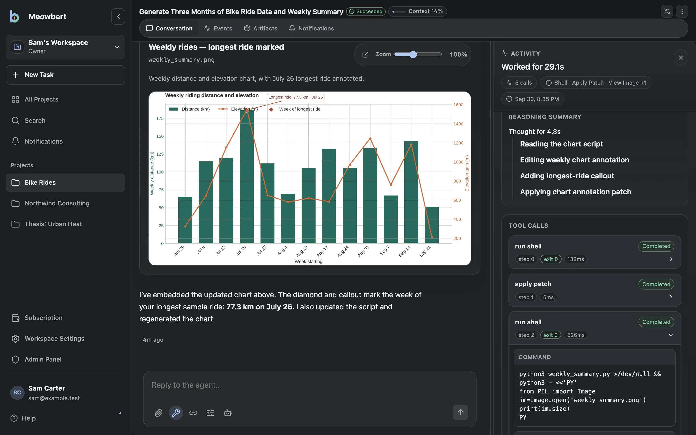
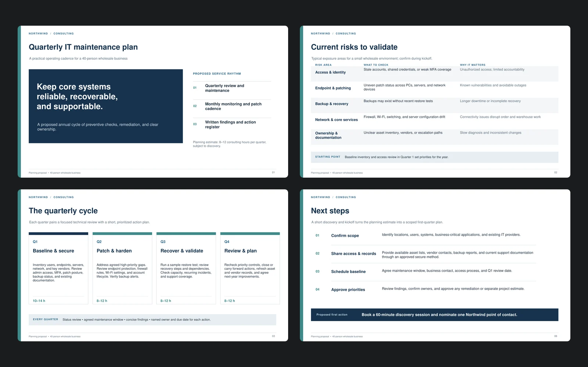
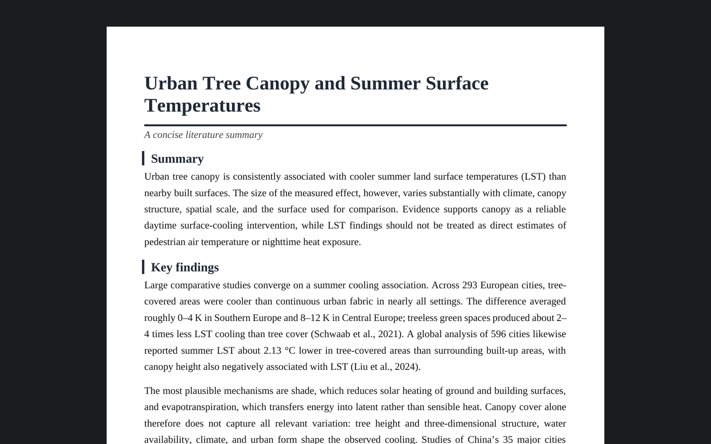
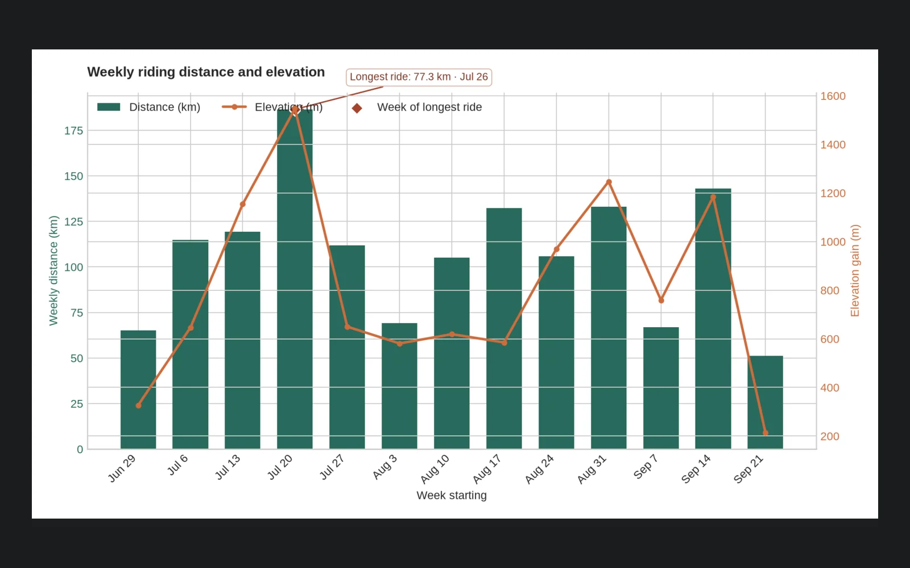
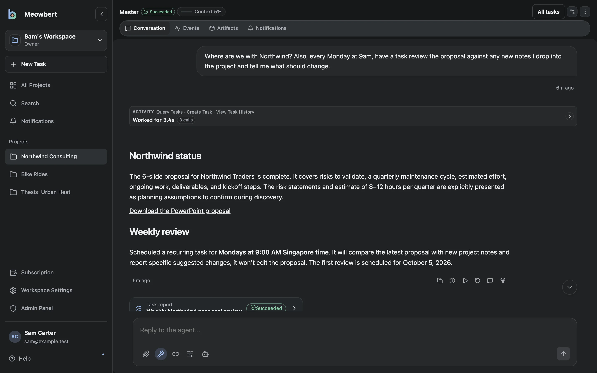
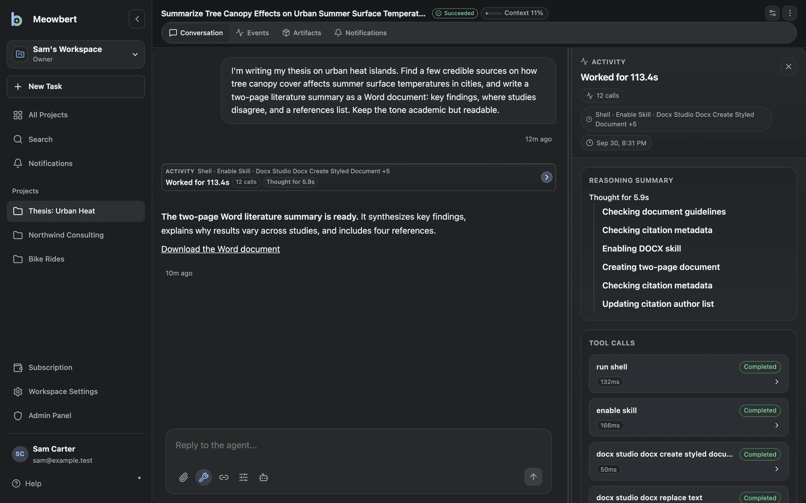
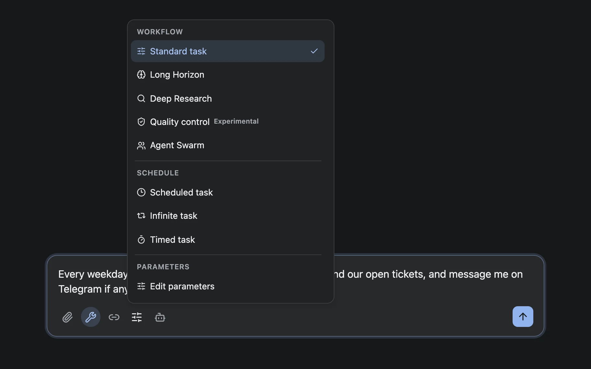
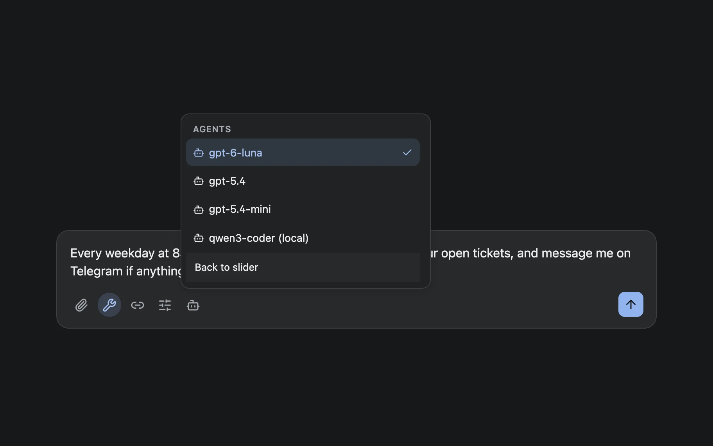

Hobbyists
Run it on a home server or a small VPS and connect whichever model you use, including one you host locally. Long tasks keep running after you close the browser.
Open source Self-hosted · AGPL-3.0
You give an agent a task, and it works on it in a sandboxed container on your server, with a shell, a browser, and document tools. Projects keep their files and task history, so you can reopen a task later and continue it.

Meowbert runs on one machine with Docker Compose, supports multiple users, and stores everything in your own database. One person can run it on a home server, and a small team can share it on a VPS.
Run it on a home server or a small VPS and connect whichever model you use, including one you host locally. Long tasks keep running after you close the browser.
Keep a project per course with its files and tasks together. Agents can look up sources, write Word documents and slides, and run code in a sandbox rather than on your laptop.
Workspaces can have several members, shared projects, and per-user limits, managed from an admin panel. Results can be sent to Telegram, Discord, email, or push notifications.
These came from a fresh install and three short requests. The files are shown as the agent produced them; the chart took one follow-up message.

Draft a 6-slide PowerPoint proposing a quarterly IT maintenance plan for my client.PowerPoint, about 2 minutes

Find credible sources on tree canopy and urban heat, and write a two-page literature summary.Word document citing 4 published studies, about 2 minutes

Make a CSV of my rides, then a Python script that charts a weekly summary.Python in the sandbox, about 1 minute plus one follow-up
Each project has its own files, instructions, memory, and task list. Tasks don't expire, so you can reopen one weeks later and send a follow-up. Each project also has a Master, an agent you can ask to start tasks, check on them, and report back.

Tasks run in short-lived Docker containers with a shell, git, Python, Node, a browser, and Office and PDF tools. The agent can install packages and run the code it writes, and it can only reach that container and the project's files.

Tasks can run on a cron schedule, loop until you stop them, or run for a set number of minutes. You can also start tasks and get their results through Telegram, Discord, GitHub, or email.

Meowbert connects to models through the OpenAI Responses API, so it works with OpenAI, API gateways, and local model servers that support it. Admins can offer several models with different reasoning effort, and an Agent Swarm has several models discuss a task before answering.

Agents create Word, PowerPoint, and PDF files and render them to check the layout.
A small website stored in a project that agents build and keep editing.
Agents can open pages, click through them, and extract content.
The agent plans its research, reads sources, and a reviewer checks the report before it's delivered.
Google Drive, OneDrive, pCloud, Outlook, rclone remotes, and YouTube.
Add a folder to skills/ to give agents your own tools.
macOS and Windows apps with a quick-launch composer and computer use.
Install it on your phone as a PWA with push notifications.
See the documentation for the full feature list.
Meowbert started as a personal project in February 2026 and was developed privately for about 7 months before this first public release. It's in daily use, but some parts are less polished than others.
Clone the repository, run the setup script, and start the stack. The first account you create becomes the admin, and a setup wizard asks for your model provider.
$ git clone https://github.com/XInTheDark/meowbert-ai-agent.git
$ cd meowbert-ai-agent
$ ./scripts/setup.sh
$ docker compose up -d
# then open http://localhost:5173The quickstart guide covers access from other machines, adding users, and backups.
Bug reports, feature requests, and pull requests are welcome on GitHub.